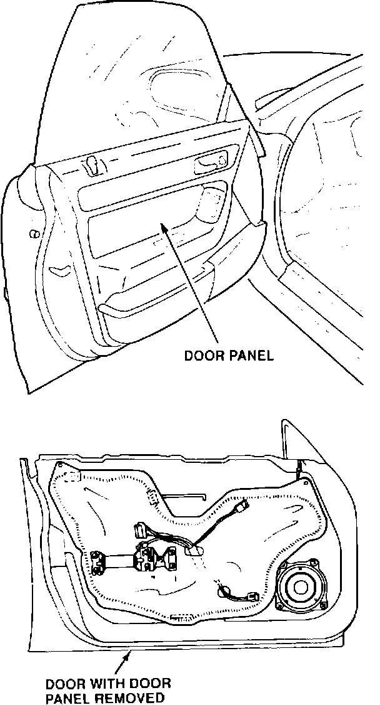
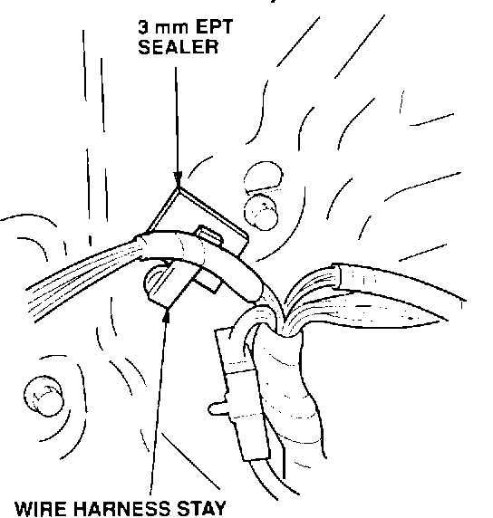
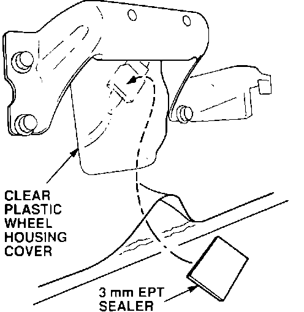

Rattles At the Door Lining
Symptom:Rattles from the lower door lining area.
Probable Cause:
Interference in two locations:
^ Between the door panel and the wire harness stay
^ Between the door counterweight and the wire harness coupler
Corrective Action:

1. Remove the door panel.

2. Apply 3 mm EPT sealer between the inner door skin and the wire harness stay.

3. Pull back the clear plastic wheel housing cover at the lower outside corner. Reach up through the opening, and apply 3 mm EPT sealer between the wire harness connector and the inside surface of the clear plastic wheel housing cover.
4. Reinstall the door panel
WARRANTY CLAIM INFORMATION
Operation number:
815025
Flat rate time:
0.2 hour
Failed P/N:
67050-SL5-A00ZZ
Defect code:
043
Contention code:
B07